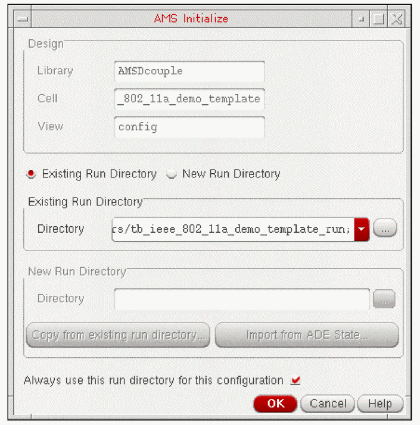

5
Running Cosimulation from the Spectre AMS Designer Environment
You can run cosimulation from the Spectre AMS Designer environment. You do not need to start or use ADE.
See the following topics for tutorial details:
Reversing Changes
If you are starting with the design as you finished with it in the
-
In the testbench schematic window, double-click SimulinkCoupler.
The Function Block Parameters form appears. Show advanced options is turned on. - Scroll down to the Use AMS Designer run script field and select No.
- Click OK.
Opening the Virtuoso Schematic and Configuration
To open the Virtuoso schematic and configuration, do the following:
-
Start the Virtuoso® software:
virtuoso &
-
In the command interpreter window (CIW), choose File – Open.
The File Open form appears. -
In the File group box, select the following:
Field Selection 
-
Click OK.
The Open Configuration form appears. -
Select yes for both Configuration and Top Cell View.
-
Click OK.
The configuration appears in the Virtuoso® Hierarchy Editor. The RF Transmitter System Testbench appears in a schematic window. The RF Transmitter System Testbench schematic contains the fixed-cell coupler you added in “Placing the coupler_2_3_a Instance on the Schematic”.
Launching the AMS Environment from the Hierarchy Editor
After you have
-
In the Virtuoso® Hierarchy Editor, choose Plugins – AMS.
AMS appears on the menu banner.
Initially, the only item available on the AMS menu is Initialize.
Initializing the Run Directory for AMS
The AMS Designer environment requires that you initialize a run directory. The tutorial files
-
In the Virtuoso® Hierarchy Editor, choose AMS – Initialize.
Thetb_ieee_802_11a_demo_template_rundirectory appears in the Directory field in the Existing Run Directory group box. You created this directory when you installed the tutorial files. -
Click OK.
The AMS Designer environment uses this run directory. Other items on the AMS menu become available for selection.
Specifying the Transient Stop Time
To specify the transient stop time, do the following:
-
In the Virtuoso® Hierarchy Editor, choose AMS – Detailed Setup – Analyses.
The Choosing Analyses form appears. -
In the Stop Time field, type
1mto match the same simulation time in MATLAB.
- Click OK.
Specifying Values for Design Variables
To specify values for the design variables in this design in the AMS environment, do the following:
-
In the Virtuoso® Hierarchy Editor, choose AMS – Detailed Setup – Design Variables.
The Editing Design Variables form appears. - If the GAIN_PA (gain) and CP_PA (compression point) design variables (for the RF power amplifier) do not already appear in the Design Variables table on this form, click Copy From.
- For each of the design variables (GAIN_PA and CP_PA), do the following:
- Click OK.
Starting the AMS Simulation
To start the AMS simulation, do the following:
-
Choose AMS – Netlist and Run.
The Netlist and Run form appears. In the SIMULATION OPTIONS section of the form, notice that the Simulate option is GUI.
-
In the CONNECT RULES section, remove the contents of the Library, Cell, and View fields.
This tutorial does not require any connect rules. -
Click Run.
The simulation starts.
Return to top